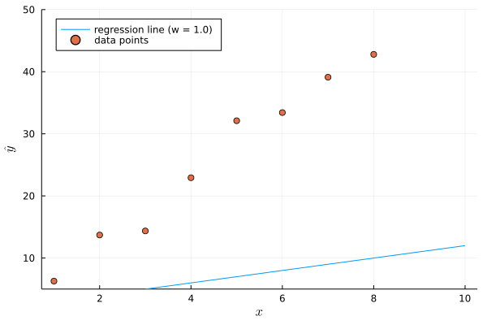

Machine Learning
Lecture 2 - Linear Models
Linear Regression
Introduction to linear models
Linear models
Having learnt a little about what it means to learn, we're going to look at our first Machine Learning algorithm, the staple for much of statistics, the numeric prediction using a linear model.
Supporting example
To support our understanding of this algorithm – linear regression – we're going to use one of the toy datasets we learnt about previously: the Boston house prices.
Linear Regression
What do we mean by 'linear'?
This model is linear simply because we have the linear combination (their addition) of different features, modulated by a parameterised weight.
\[ \hat{y} = w_0 + w_1 x_1 + w_2 x_2 + ... + w_m x_m \]
where \(\hat{y}\) is the values predicted by the linear model, \(w_i\) are the weight parameters and \(x_i\) are the features of the input data.
We can otherwise reformat this equation into:
\[ \sum_{i = 0}^{m} w_i x_i \]
What are the weights of the model?
The weights of the linear model defines how the position of the prediction 'line'. If we modify the weights, this line will appear different in our visualisations, and so will the predictions.
What are the 'best' weights?
- Loss function – sum of squared errors or the mean of the sums
\[ \frac{1}{N} \sum_i^N | \hat{y} - y | \]
Visualising the loss
draw lines from each dot to the prediction line
Loss curve
- If we move the weight value, then we get a different point on the curve.
How to select the best weights
- Lowest point on the curve.
Automatically computing the best weights
- Gradient descent
Logistic Regression
Classification
Moving from regression to classification
We now turn to classification